ノイズ付与
ガウス σ = 10 / 25 / 50
0–255スケールの標準偏差。加算後に画素値をクリップ。
ポアソン λ = 50 / 25 / 10
画素値 x ∈ [0, 1] に対し Poisson(λx) / λ を使用。
論文再現（ZS-N2N再現実験）では、Kodak24とMcMaster18でガウス・ポアソンノイズの除去を評価した。実際の評価画像で除去前後を見比べ、データセット全体のPSNRを論文値と照合する。


kodim08 · ガウス σ = 25 · 80 × 80 px の拡大各評価画像の中央256 × 256 pxを使い、ノイズ画像1枚ごとにネットワークを学習する。
ガウス σ = 10 / 25 / 50
0–255スケールの標準偏差。加算後に画素値をクリップ。
ポアソン λ = 50 / 25 / 10
画素値 x ∈ [0, 1] に対し Poisson(λx) / λ を使用。
ブロック内の右上・左下の平均がD1、左上・右下の平均がD2。各128 × 128 px。

対になる画像を互いの教師にして、残差損失と一貫性損失を最小化。3層の畳み込み（中間48チャネル）をAdamで2,000反復学習。
256 × 256 pxのノイズ画像から、CNNが推定したノイズを引く。出力は [0, 1] に収める。
原画像と比較してPSNR・SSIMを算出。Kodak24は24枚、McMaster18は18枚を強さごとに集計し、論文のPSNRと比較。
D1/D2の表示例は上部と同じ kodim08（σ = 25）の保存済み入力から作成。初期学習率0.001を1,500反復で半減。ノイズと初期化のシードはいずれも0。
上段は評価に使った中央256 × 256 px。下段は同じ位置を最近傍で拡大した。各カードのPSNRは表示用PNGに変換する前のテンソルで計算した。
kodim08.png窓枠と外壁を比較
PSNR 20.48 → 27.77 dB
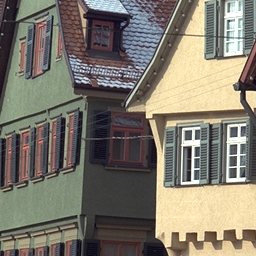

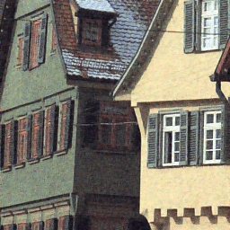
枠内の拡大 · 80 × 80 px
保存値（除去後） 27.7727 dB · 画像再生成 27.7727 dB
PSNR 17.30 → 26.00 dB
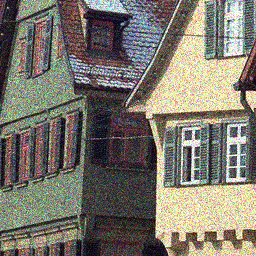
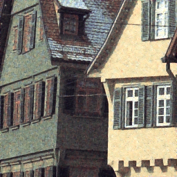
枠内の拡大 · 80 × 80 px
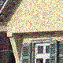
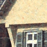
保存値（除去後） 25.9966 dB · 画像再生成 25.9966 dB
PSNR 28.25 → 32.80 dB
枠内の拡大 · 80 × 80 px
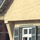
保存値（除去後） 32.8047 dB · 画像再生成 32.8047 dB
PSNR 14.96 → 23.17 dB
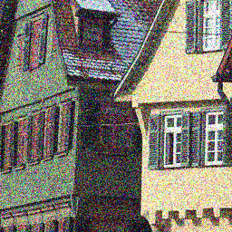
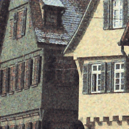
枠内の拡大 · 80 × 80 px

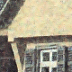
保存値（除去後） 23.1657 dB · 画像再生成 23.1657 dB
PSNR 20.30 → 28.24 dB
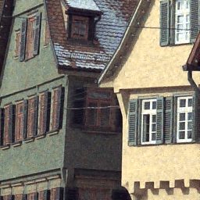
枠内の拡大 · 80 × 80 px
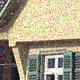
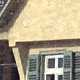
保存値（除去後） 28.2448 dB · 画像再生成 28.2448 dB
PSNR 13.31 → 23.17 dB
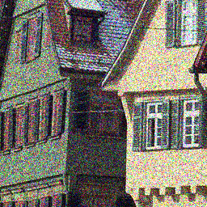
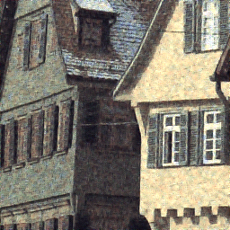
枠内の拡大 · 80 × 80 px

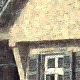
保存値（除去後） 23.1655 dB · 画像再生成 23.1655 dB
12.tif細い網目と明るさの異なる面を比較
PSNR 20.45 → 29.68 dB
枠内の拡大 · 80 × 80 px
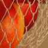
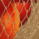
保存値（除去後） 29.6826 dB · 画像再生成 29.6826 dB
PSNR 18.09 → 29.08 dB
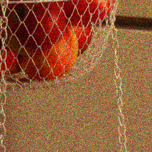
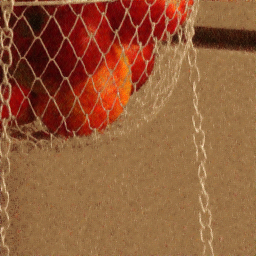
枠内の拡大 · 80 × 80 px
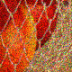
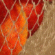
保存値（除去後） 29.0791 dB · 画像再生成 29.0791 dB
PSNR 28.26 → 34.12 dB
枠内の拡大 · 80 × 80 px
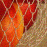
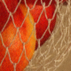
保存値（除去後） 34.1212 dB · 画像再生成 34.1212 dB
PSNR 14.79 → 25.10 dB
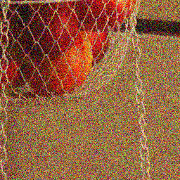
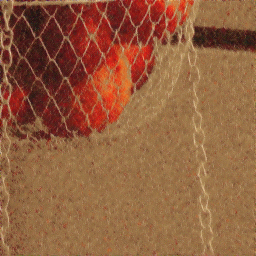
枠内の拡大 · 80 × 80 px
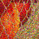
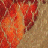
保存値（除去後） 25.0970 dB · 画像再生成 25.0970 dB
PSNR 21.10 → 30.94 dB
枠内の拡大 · 80 × 80 px
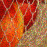
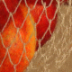
保存値（除去後） 30.9410 dB · 画像再生成 30.9410 dB
PSNR 14.12 → 26.37 dB
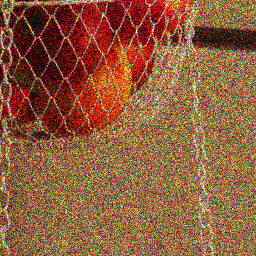
枠内の拡大 · 80 × 80 px
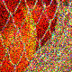
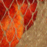
保存値（除去後） 26.3686 dB · 画像再生成 26.3686 dB
各画素で「ノイズ画像 − 原画像」の絶対値をRGBで平均した。すべて同じ明るさの尺度で、左から右へノイズが強くなる。
kodim08 · ガウス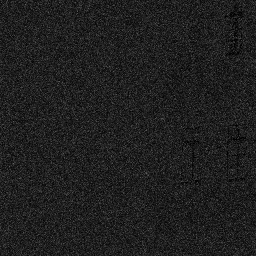
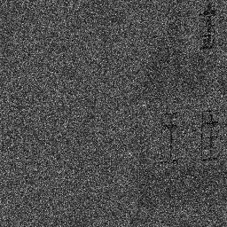
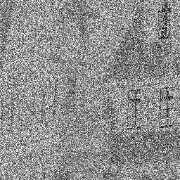
kodim08 · ポアソン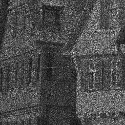
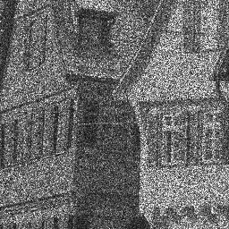
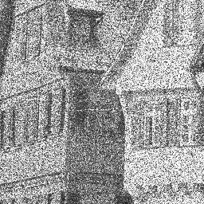
12 · ガウス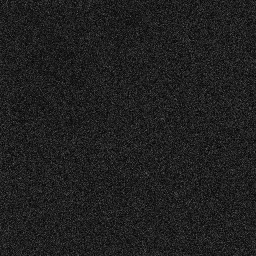
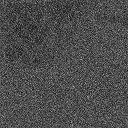
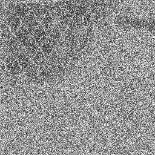
12 · ポアソン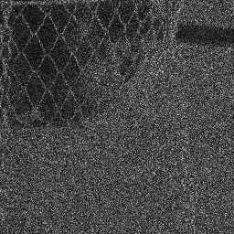
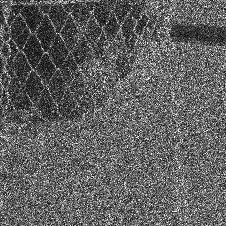
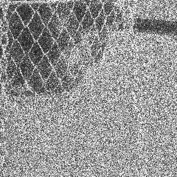
ポアソンでは、McMaster18の網の背後にある明部に差分が強く出る。差分は表示用のクリップをかける前のテンソルから計算した。
各条件の平均値を保存済みの summary.csv から転記した。PSNRの単位はdB、差は再現値 − 論文値。サムネイルから同じ条件の拡大比較を開ける。
| データセット | 強さ | 枚数 | シード数 | 再現 PSNR | 論文 PSNR | 差 (dB) | 判定 | SSIM | 秒/枚 | ノイズ → 除去 |
|---|---|---|---|---|---|---|---|---|---|---|
| Kodak24 | σ = 10 | 24 | 1 | 33.39 | 33.69 | -0.30 | OK | 0.9097 | 42.2 | kodim08 ↑ |
| Kodak24 | σ = 25 | 24 | 1 | 28.79 | 29.07 | -0.28 | OK | 0.7877 | 42.8 |
|
| Kodak24 | σ = 50 | 24 | 1 | 24.69 | 24.81 | -0.12 | OK | 0.6172 | 43.0 | kodim08 ↑ |
| McMaster18 | σ = 10 | 18 | 1 | 34.02 | 34.21 | -0.19 | OK | 0.9040 | 41.4 | 12 ↑ |
| McMaster18 | σ = 25 | 18 | 1 | 28.62 | 28.80 | -0.18 | OK | 0.7687 | 41.4 | 12 ↑ |
| McMaster18 | σ = 50 | 18 | 1 | 23.84 | 24.02 | -0.18 | OK | 0.5968 | 41.4 | 12 ↑ |
| データセット | 強さ | 枚数 | シード数 | 再現 PSNR | 論文 PSNR | 差 (dB) | 判定 | SSIM | 秒/枚 | ノイズ → 除去 |
|---|---|---|---|---|---|---|---|---|---|---|
| Kodak24 | λ = 50 | 24 | 1 | 29.38 | 29.45 | -0.07 | OK | 0.8085 | 65.0 | kodim08 ↑ |
| Kodak24 | λ = 25 | 24 | 1 | 27.49 | 27.52 | -0.03 | OK | 0.7365 | 65.3 | kodim08 ↑ |
| Kodak24 | λ = 10 | 24 | 1 | 24.88 | 24.92 | -0.04 | OK | 0.6097 | 65.0 | kodim08 ↑ |
| McMaster18 | λ = 50 | 18 | 1 | 30.44 | 30.36 | +0.08 | OK | 0.8519 | 36.4 | 12 ↑ |
| McMaster18 | λ = 25 | 18 | 1 | 28.48 | 28.41 | +0.07 | OK | 0.7959 | 36.1 | 12 ↑ |
| McMaster18 | λ = 10 | 18 | 1 | 25.84 | 25.75 | +0.09 | OK | 0.6944 | 35.4 | 12 ↑ |
合格範囲はKodak24の σ = 25 が ±0.30 dB、その他の条件は ±0.50 dB。
表は元の実験の全画像平均。右端の除去例は各データセットから選んだ1枚を再生成したもの。